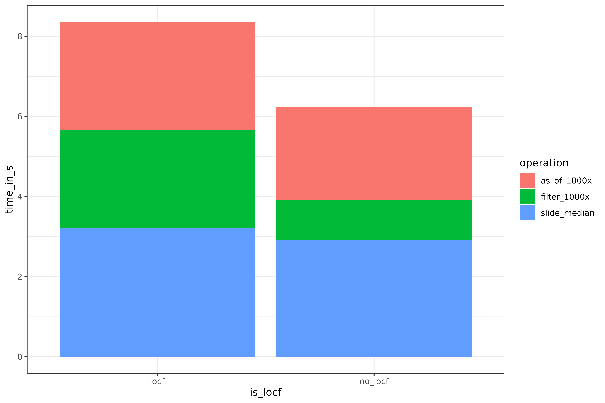

Removing redundant update data to save space
We do not need to store version update rows that look like the last
version of the corresponding observations carried forward (LOCF) for use
with epiprocess‘s’ epi_archive-related
functions, as they all apply LOCF to fill in data between explicit
updates. By default, we even detect and remove these LOCF-redundant rows
to save space; this should not impact results as long as you do not
directly work with the archive’s DT field in a way that
expects these rows to remain.
There are three different values that can be assigned to
compactify:
-
TRUE(default): removes any LOCF-redundant rows without any message or other feedback -
FALSE: keeps any LOCF-redundant rows without any message or other feedback -
"message": if there are LOCF-redundant rows, removes them and produces a message with some information about what rows were removed
For this example, we have one chart using LOCF values, while another doesn’t use them to illustrate LOCF. Notice how the head of the first dataset differs from the second from the third value included.
library(epiprocess)
library(dplyr)
dt <- archive_cases_dv_subset$DT
locf_omitted <- as_epi_archive(dt)
locf_included <- as_epi_archive(dt, compactify = FALSE)
head(locf_omitted$DT)
#> Key: <geo_value, time_value, version>
#> geo_value time_value version percent_cli case_rate_7d_av
#> <char> <Date> <Date> <num> <num>
#> 1: ca 2020-06-01 2020-06-02 NA 6.628329
#> 2: ca 2020-06-01 2020-06-06 2.140116 6.628329
#> 3: ca 2020-06-01 2020-06-08 2.140379 6.628329
#> 4: ca 2020-06-01 2020-06-09 2.114430 6.628329
#> 5: ca 2020-06-01 2020-06-10 2.133677 6.628329
#> 6: ca 2020-06-01 2020-06-11 2.197207 6.628329
head(locf_included$DT)
#> Key: <geo_value, time_value, version>
#> geo_value time_value version percent_cli case_rate_7d_av
#> <char> <Date> <Date> <num> <num>
#> 1: ca 2020-06-01 2020-06-02 NA 6.628329
#> 2: ca 2020-06-01 2020-06-06 2.140116 6.628329
#> 3: ca 2020-06-01 2020-06-07 2.140116 6.628329
#> 4: ca 2020-06-01 2020-06-08 2.140379 6.628329
#> 5: ca 2020-06-01 2020-06-09 2.114430 6.628329
#> 6: ca 2020-06-01 2020-06-10 2.133677 6.628329LOCF-redundant values can mar the performance of dataset operations.
As the column case_rate_7d_av has many more LOCF-redundant
values than percent_cli, we will omit the
percent_cli column for comparing performance.
dt2 <- select(dt, -percent_cli)
locf_included_2 <- as_epi_archive(dt2, compactify = FALSE)
locf_omitted_2 <- as_epi_archive(dt2, compactify = TRUE)In this example, a huge proportion of the original version update data were LOCF-redundant, and compactifying saves a large amount of space. The proportion of data that is LOCF-redundant can vary widely between data sets, so we won’t always be this lucky.
As we would expect, performing 1000 iterations of
dplyr::filter is faster when the LOCF values are
omitted.
# Performance of filtering
iterate_filter <- function(my_ea) {
for (i in 1:1000) {
filter(my_ea$DT, version >= as.Date("2020-01-01") + i)
}
}
elapsed_time <- function(fx) c(system.time(fx))[[3]]
speed_test <- function(f, name) {
data.frame(
operation = name,
locf = elapsed_time(f(locf_included_2)),
no_locf = elapsed_time(f(locf_omitted_2))
)
}
speeds <- speed_test(iterate_filter, "filter_1000x")We would also like to measure the speed of epi_archive
methods.
# Performance of as_of iterated 200 times
iterate_as_of <- function(my_ea) {
for (i in 1:1000) {
my_ea %>% epix_as_of(min(my_ea$DT$time_value) + i - 1000)
}
}
speeds <- rbind(speeds, speed_test(iterate_as_of, "as_of_1000x"))
# Performance of slide
slide_median <- function(my_ea) {
my_ea %>% epix_slide(median = median(.data$case_rate_7d_av), .before = 7)
}
speeds <- rbind(speeds, speed_test(slide_median, "slide_median"))Here is a detailed performance comparison:
speeds_tidy <- tidyr::gather(speeds, key = "is_locf", value = "time_in_s", locf, no_locf)
library(ggplot2)
ggplot(speeds_tidy) +
geom_bar(aes(x = is_locf, y = time_in_s, fill = operation), stat = "identity")